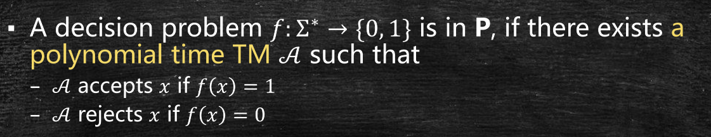
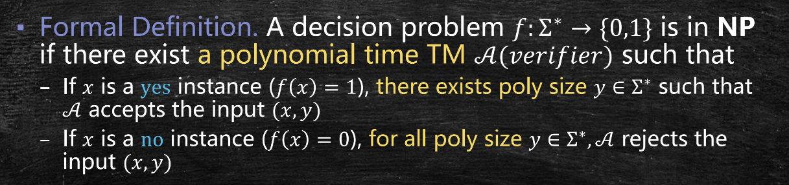
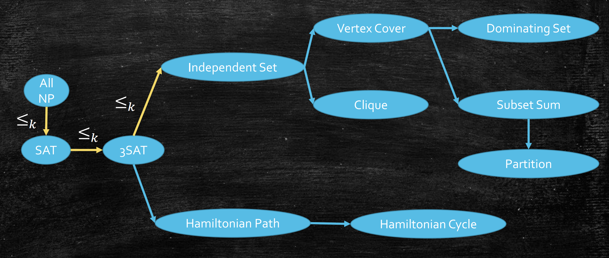

NP 完全(1)：P, NP 与 NP 完全
Last updated on June 13, 2025 pm
本文为SJTU-AI2615算法课程的知识点复习，主要复习内容为NP完全问题（基础），包括P与NP、Karp 归约、NP-hard与NP完全等。
P 与 NP
P 类 (Polynomial Time)
- 定义：存在多项式时间图灵机可解决的决策问题集合

- 示例：路径问题、最大流问题、素数判定
NP 类 (Nondeterministic Polynomial Time)
- 定义：存在多项式时间验证机的决策问题集合

- 示例：SAT 问题、顶点覆盖问题、哈密顿路径问题
P 与 NP 关系
- ：所有 P 类问题都是 NP 类问题
- 未知问题：是否？
归约与 NP 完全性
卡普归约 (Karp Reduction)
- 定义：决策问题 能归约到决策问题 ，是指存在一个图灵机 能在多项式时间内将一个 实例转换为正确性相同的 实例，记作
- 理解：这表明 的难度略高于
- 传递性：如果 ，，那么
经典归约示例
SAT 归约到 3SAT
- 方法：引入新变量，将长字句拆分为最多三个文字的短字句
- 例子：
- 解释： 是一个正确的 SAT 实例当且仅当 是一个正确的 3SAT 实例
3SAT 归约到独立集
- 方法：
- 对每个字句，构造三角形，其中每个顶点代表一个文字
- 连接代表互为否定文字的顶点
- 设独立集问题 为字句数
- 解释：要证明构造的实例和原实例的正确性相同
独立集归约到顶点覆盖
- 方法： 是 的独立集 是 的顶点覆盖
独立集归约到团问题（Clique）
- 方法： 是 的独立集 是 中的团
NP-hard 与 NP 完全
- NP-hard：如果对任意 ，那么 是 NP-hard 问题
- NP-complete：如果 并且对任意 ，那么 是 NP-complete 问题
- Cook-Levin 定理：SAT 是 NP-complete 问题
- NP-complete 证明步骤：
- 证明问题属于 NP 类
- 选择已知 NP 完全问题
- 构造从 到目标问题的多项式时间归约

注：本文中所有图片均来自张宇昊老师的课程PPT。
NP 完全(1)：P, NP 与 NP 完全
https://cny123222.github.io/2025/05/13/NP-完全-1-：P, NP 与 NP 完全/